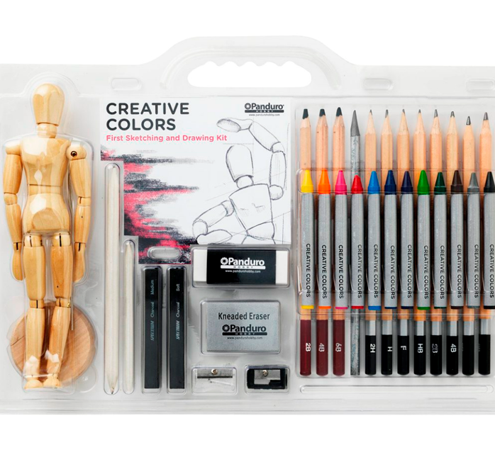

Det kan være svært som nybegynder at regne ud, hvilke materialer, man skal købe. Nedstående artikel vil vejlede til køb, der ikke koster en bondegård, men som stadig tilbyder en vis kvalitet.
Blyanter - startsæt
Med blyanter er varriationen af bly og dets synlighed stor. Det kan godt betale sig at investere i blyanter, der koster en smule mere. Panduro og Bog & Idé har fine udvalg til at starte ud med. Bog & Idé har ofte et stort udvalg af varrianten Faber-Castell, som er et stabilt mærke. Når du handler blyanter, så hold øje med hvilken afmærkning de har. Hvis de f.eks. har mærket 2B, så er de relativ mørke. Jo højere B-værdien er, jo mørkere er blyet. Billige blyanter som findes i Tiger kan sagtens bruges til lette skitser, men da disse er af lav bly-værdi, så ses de ikke lige så tydeligt.
Faber-Castells "Classic Sketch Set" ville være et godt sæt at starte ud med. "Classic Sketch Set" koster 99,95 kr og kan bestilles online. Sættet tilbyder en varriation af blyanter samt en tegnestub, som er meget brugbar, når man vil lave skygger (tjek "tegneguiden - niveau 3" for at se eksempel").
Tryk på billedet for at se mere om sættet og bestilling.

Udvidet sæt
Hvis man vil have et udvidet sæt, der byder på mere end bare blyanter, så er et startsæt fra Panduro også en mulighed. Sættet koster 249,95 kr. og kan købes i Panduro i Aarhus C ved Badstuegade 5-7. Udover en varration af blyanter inkluderer sættet også vigtige tegneredskaber som viskelæder, blyantspidser, farver, kul, tegnestubbe og ikke mindst en kropsmodel, man kan tegne efter.
Dette sæt vil kunne bære dine skitser og tegninger langt af vejen.
- Variationen af blyanter giver dig god mulighed for at eksperimentere med de forskellige værdi-typer.
Hvis du arbejder med skygger på dine tegninger eller ønsker at lære det, så er dette også et plus.
- Tegnestubben giver dig mulighed for at gøre dine skygger mere realistiske.
- Kullet giver dig mulighed for at skabe vilde skygger, så du kan arbejde mere med dybde på dine tegninger.
- Farverne giver dine tegninger liv.
Modellen giver dig mulighed for at øve dig i at skitsere og illustere menneskekroppe, der er positioneret på forskellig vis.
Selvom man ikke ønsker at blive den store kunstner, så er det stadig en god ting som multimediedesigner at investere i noget ordenligt udstyr inden for tegning